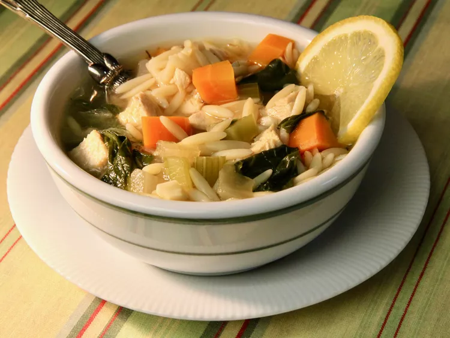

Lemon Chicken Orzo Soup

Descripton
This lemon chicken orzo soup is comfort in a bowl. It is so flavorful with tender pieces of chicken in a lemony broth with orzo pasta, carrots, onions, celery, and baby spinach. This lemon chicken orzo soup with brighten even the gloomiest winter day.
This soup is easy to prepare and leftovers warm up well. The lemon is perky and all the other ingredients build upon each other to an absolutely delicious meal.
Ingredients
- 8 ounces orzo pasta
- 1 teaspoon olive oil
- 3 medium carrots, chopped
- 3 ribs celery, chopped
- 1 medium onion, chopped
- 2 cloves garlic, minced
- 1/2 teaspoon dried thyme
- 1/2 teaspoon dried oregano
- salt and pepper to taste
- 1 bay leaf
- 32 ounces fat-free, low sodium chicken broth
- 1/2 cup fresh lemon juice
- 1 lemon, zested
- 8 ounces cooked chicken breast, chopped
- 1 (8 ounce) package baby spinach leaves
- 1 lemon sliced for garnish (optional)
- 1/4 cup grated parmesan cheese (optional)
Steps
- Bring a large pot of lightly salted water to a boil. Stir in orzo and return to a boil. Cook pasta uncovered until partially cooked through but not yet soft, about 5 minutes. Drain and risne with cold water until cooled completely.
- Meanwhile, heat olive oil in a large pot over medium heat. Add carrots, celery, and onion; cook until vegetables begin to soften and onion becomes translucent, about 5 minutes. Add garlic; cook and stir until fragrant, about 1 minute more. Season mixture with thyme, oregano, bay leaf, salt, and black pepper; continue cooking another 30 seconds before pouring chicken broth into the pot.
- Bring broth to a boil. Patrially cover the pot, reduce heat to medium-low, and simmer until vegetables are just tender, about 10 minutes.
- Sitr orzo, lemon juice, and lemon zest into broth; add chicken. Cook until chicken and orzo are heated through, about 5 minutes. Add baby spinach; cook until spinach wilts inot broth and orzo is tender, 2 to 3 minutes. Ladel soup into bowls; garnish with lemon slices and parmesan cheese.